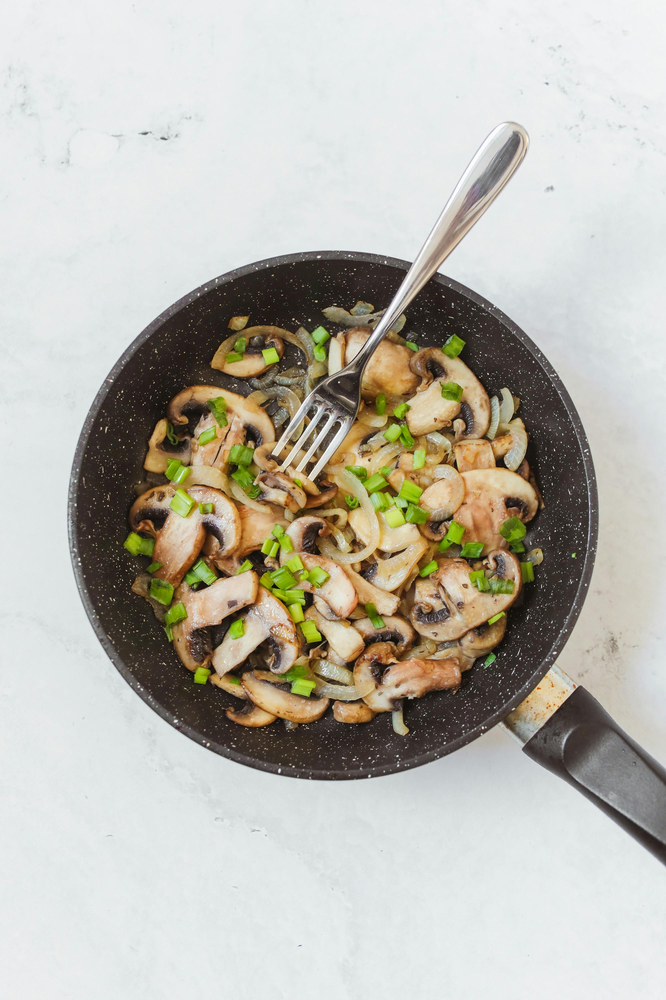

Stir Fry

Description
Stir fry is a quick, flavorful dish where fresh vegetables and protein are cooked over high heat, creating a slightly charred yet tender meal. Tossed with a savory sauce, it’s a versatile option for lunch or dinner.
Ingredients:
For the stir fry
- 1 cup of protein (chicken, beef, shrimp, or tofu)
- 2 cups mixed vegetables (e.g., bell peppers, broccoli, carrots, snap peas)
- 2 tablespoons vegetable oil
For the sauce
- 2 tablespoons soy sauce
- 1 tablespoon oyster sauce (optional)
- 1 teaspoon cornstarch mixed with 2 tablespoons water
- 1 teaspoon honey or brown sugar
- 1 clove garlic, minced
- 1 teaspoon grated ginger
Method:
- Prepare the ingredients: Cut the protein and vegetables into bite-sized pieces. Mix the sauce ingredients in a small bowl.
- Cook the protein: Heat 1 tablespoon of oil in a large skillet or wok over medium-high heat. Add the protein and stir-fry until cooked through. Remove and set aside.
- Cook the vegetables: Add the remaining oil and stir-fry the vegetables until tender-crisp (about 3-5 minutes).
- Combine and sauce: Return the protein to the pan, pour in the sauce, and stir. Cook for 1-2 minutes until the sauce thickens slightly and coats everything.
- Serve: Enjoy as is or over rice or noodles.